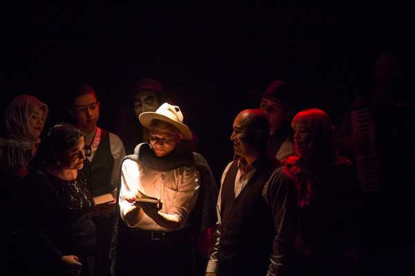
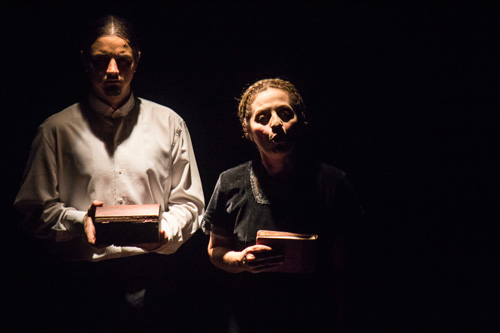
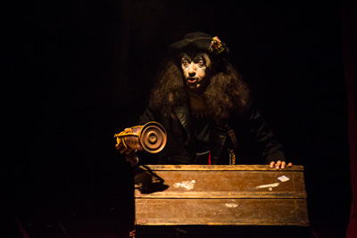
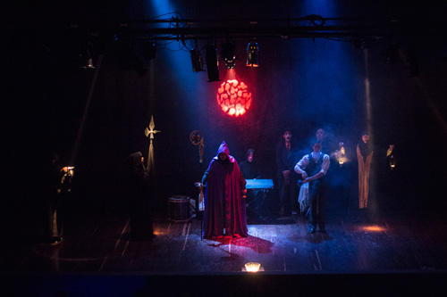

Fernando González - Velada metafísica
Teatro Matacandelas (Medellín) en la VII Muestra de Teatro Alternativo de Pereira, 23 de julio de 2015.
Por: Albeiro Montoya Guiral

Tomado de: literariedad.co
El Teatro Matacandelas es memoria, pero ante todo, poesía. Se nota en la manera como asume su oficio, en la tradición de sus montajes, una clara preocupación parecida a la del poeta: crear, suscitar belleza, hacer hablar lo oculto del ser humano. No adapta literatura; da vida, voz, a los fantasmas, se empecina por no dejar morir a sus autores amados: Sylvia Plath, Alfred Jarry, Pessoa, Andrés Caicedo, Jorge Holguín, para citar algunos. Y no podía faltar el caso de Fernando González Ochoa, caminante, poeta, con quien el grupo tiene una particular cercanía, una comunión desde su origen en Envigado, y cl país una eterna deuda a nivel literario, social y, si se quiere, político. Un maestro de los que ya no hacen, un filósofo con método propio, un amigo excepcional, un místico.
Y es allí donde lo metafísico exacerba la filosofía, la simple escritura: en el teatro. La naturaleza trasgredida, la reencarnación. El espectador asiste a un ritual, a un sueño con vista a Otraparte, Medellín, Marsella, al camino, al huerto, al alma misma del hombre complejo por el abatimiento, la alegría, el odio y el amor desmedidos que lo conforman. Velada metafísica no podría ser mejor nombre para esta pieza que resucita a Fernando González. Una actuación excepcional del protagonista que mezcla el humor y la tristeza misma, y de todo el grupo que recrea a los heterónimos, la familia, los amigos –y enemigos– del autor de Viaje a pie.
Es Fernando González. Velada metafísica un recopilatorio de todas las ideas y momentos del autor, extraídas de los testimonios –quizá toda su obra sea un testimonio- de sus libros publicados e inéditos a fin de crear su perfil completo, sin embargo hay una seria posición del Matacandelas frente a Colombia, marcada por el énfasis que hace en los textos políticos y sociales de González Ochoa: la sátira mordaz venida de las vísceras hacia la génesis de la Antioquia hipócrita, clerical y mercantil cuyo punto de llegada conocemos muy bien hoy, y a todo el país consumido por los fervores de la guerra.

Y hay en la velada de la misma manera una reprensión por el abandono del artista, no tanto por el acostumbrado olvido al que los sometemos después de muertos, sino en vida cuando la censura, el señalamiento y el abandono son armas que en esa búsqueda de desprestigiarlos terminan por nutrir sus obras. Se puede preguntar cómo sería el pensamiento de Fernando González sin su Otraparte y las costumbres de sus paisanos, y del mismo modo cómo sería esta Velada metafísica sin los tormentos, altibajos y crecientes del poeta. Cuánta belleza hay en el dolor, y cómo duele la belleza.

¿Hombre, por qué no hay hombres bellos en Colombia?
¿Cómo viven y que ejecutan? Están divididos en liberales y conservadores.
¿Qué trabajan? Discursos.
¿Cómo aman? A todas.
¿Cómo mueren? Confesados.
Esta obra nos hace desconocer los bordes del sueño y la vigilia gracias al manejo de las luces, la música, la voz, creando instantes muy poéticos sin dejar de lado nunca la pintura de los entornos. Bajo la dirección de Cristóbal Peláez el Teatro Matacandelas de Medellín crea un poema en escena, no hay esquemas, no hay estructuras, el arte es todo. La vida, una sinfonía. Y no podría ser de otra forma, se trataba de la vida de un gran poeta, de un santo.
